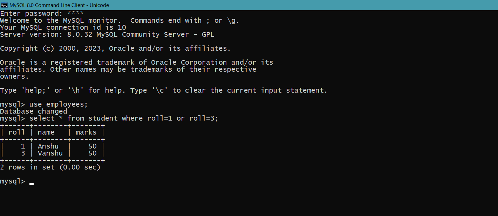

MySQL OR Condition
The MySQL OR condition specifies that if you take two or more conditions then one of the conditions must be fulfilled to get the records as result.
Syntax
SELECT column1, column2, ...
FROM table_name
WHERE condition1 or condition2 ;
Example
SELECT * FROM student
WHERE roll= 1 or roll = 3;
